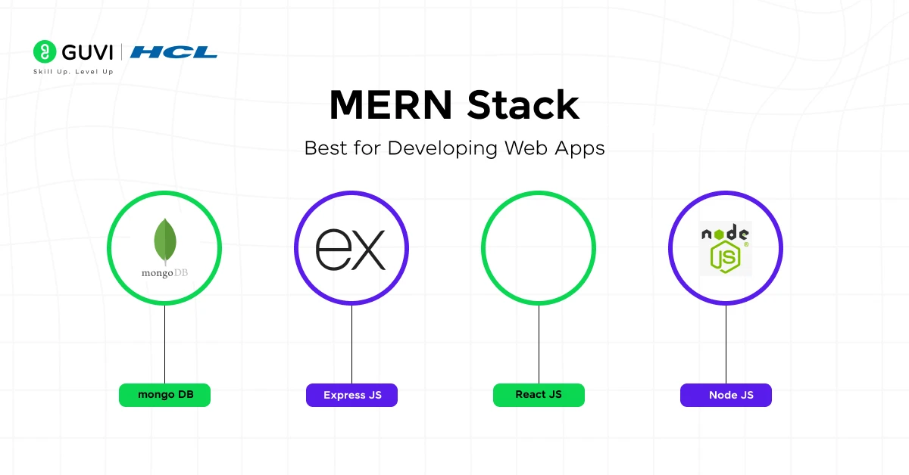
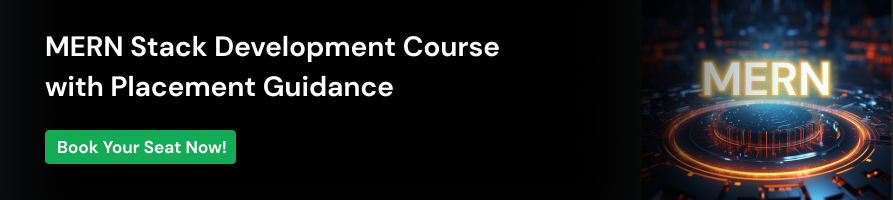
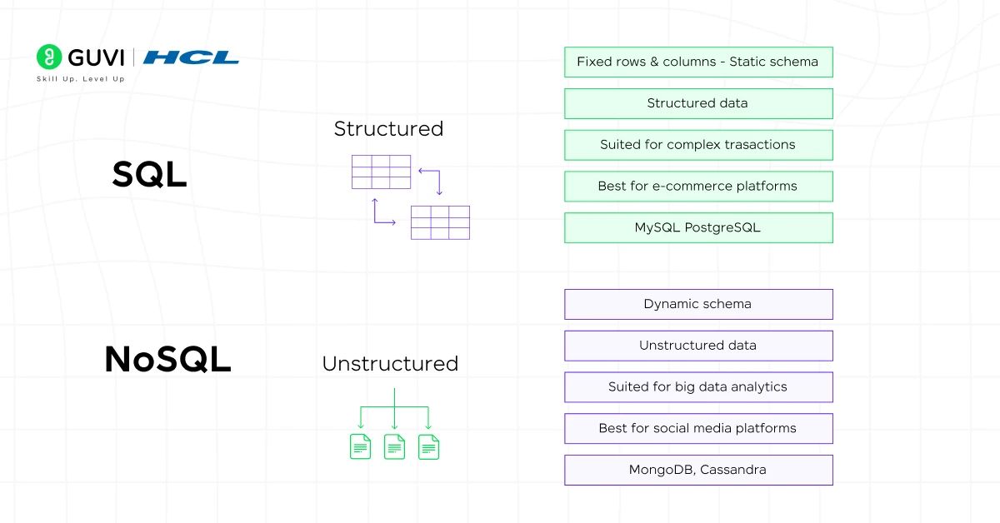

MERN
Top 30 MERN Stack Developer Interview Questions and Answers
By Lukesh S
Feb 26, 2026 | 9 Min Read | 92990 Views
(Last Updated)
Hey, so you’ve got a MERN stack interview coming up, or you’re preparing for one, and you’re wondering:
Here’s the honest truth: most candidates know the basics. They can explain what MongoDB is. They know React renders components. But the developers who actually get hired? They understand why things work the way they do, they’ve broken things while building projects, and they can back up every answer with a real example.
That’s exactly what this guide is built for. We’ve put together 35 of the most asked MERN stack interview questions, from the “tell me what MERN stands for” basics all the way to the sneaky, tricky questions that trip up even experienced developers. Every answer comes with a clear explanation, a code example where it helps, and the kind of context that makes your answer sound like it came from someone who’s actually built with this stack.
So, let’s get started!
Quick Answer:
MERN stack interviews check whether you understand full-stack JavaScript beyond definitions. Be prepared to explain how React, Node.js, Express, and MongoDB work together, design APIs, manage state, handle authentication, and optimize performance. Interviewers look for practical reasoning, not just what each tool does, but why you chose a particular approach while building real applications.
Table of contents
- Beginner MERN Stack Interview Questions and Answers
- What is the MERN Stack, and why is it popular?
- What is MongoDB, and why is it used in the MERN stack?
- What is Express.js, and what role does it play in MERN?
- What is React, and why is it used for the frontend?
- What is Node.js, and how is it used in MERN?
- Can you explain the difference between SQL and NoSQL databases?
- What is the Virtual DOM in React, and why does it matter?
- What is the difference between SQL and MongoDB?
- What is npm, and why is it important in MERN development?
- What is JSX in React?
- What is a REST API, and how does it connect React with Node.js in MERN?
- Intermediate MERN Stack Interview Questions and Answers
- What is Mongoose, and why is it used instead of the native MongoDB driver?
- What is the difference between useState and useReducer in React?
- How does routing work in a MERN application?
- What is JWT, and how is authentication implemented in MERN?
- What is CORS, and how do you handle it in a MERN app?
- What is the difference between useEffect and useLayoutEffect?
- How do you manage global state in a React application?
- What is middleware in Express.js?
- What is the difference between state and props in React?
- What is Axios, and how is it different from the Fetch API?
- Advanced MERN Stack Interview Questions and Answers
- How do you optimize the performance of a React application?
- How do you handle authentication and authorization in a MERN app at scale?
- Explain the MongoDB Aggregation Pipeline.
- What is Server-Side Rendering (SSR) and when would you use it with a MERN app?
- How do you prevent common security vulnerabilities in a MERN application?
- What is WebSocket, and when would you use it in a MERN app instead of REST?
- What are React Hooks rules, and what happens if you break them?
- How do you implement code splitting in a React app, and why does it matter?
- What is the Event Loop in Node.js, and how does it enable non-blocking I/O?
- How would you design the architecture of a production-ready MERN application?
- Conclusion
Beginner MERN Stack Interview Questions and Answers
If you’re stepping into your first MERN developer interview, this section is your foundation. These questions test whether you understand what each
layer of the stack does, how they connect, and why MERN became such a popular choice for building modern web applications.

The MERN Stack is a combination of four key technologies:
MongoDB: A NoSQL database for storing data.
Express.js:A lightweight web application framework for Node.js.
React: A JavaScript library for building user interfaces.
Node.js: A JavaScript runtime for server-side development.
Its popularity stems from its end-to-end use of JavaScript which simplifies development and enables efficient, real-time data flow between client and server. This makes the MERN Stack
an excellent choice for single-page applications (SPAs) and dynamic websites
2. What is MongoDB, and why is it used in the MERN stack?
MongoDB is a NoSQL database that stores data in flexible, JSON-like documents called BSON (Binary JSON). Unlike relational databases that use fixed tables and rows, MongoDB allows you to store data in
varying structures, which makes it ideal for applications where data models evolve.
In the MERN stack,MongoDB pairs naturally with Node.js
and JavaScript because data is stored and retrieved in a format that closely resembles JavaScript objects, reducing the need for data transformation.
3. What is Express.js, and what role does it play in MERN?
Express.js is a minimal, unopinionated web application framework for Node.js.
It simplifies the process of building server-side applications by providing
tools for routing, middleware management, request handling, and response formatting.
4. What is React, and why is it used for the frontend?
React is an open-source JavaScript library developed by Facebook (Meta) for building user interfaces. It uses a component-based architecture,
where UIs are broken into reusable, self-contained components, each managing its own state and logic.

5. What is Node.js, and how is it used in MERN?
Node.js is a server-side JavaScript runtime built on Chrome’s V8 engine. It allows JavaScript, traditionally a browser-only language, to run on the server. In the MERN stack, Node.js powers the backend, runs Express.js, handles
incoming HTTP requests, executes server logic, and connects to MongoDB.
6. Can you explain the difference between SQL and NoSQL databases?

- Use structured tables with predefined schemas.
- Suitable for applications with fixed schemas (e.g., financial systems).
- Examples: MySQL, PostgreSQL.
- Use dynamic schemas which are more flexible.
- Ideal for handling unstructured or semi-structured data like user profiles, logs, or sensor data.
- Examples: MongoDB, CouchDB
6. What is the Virtual DOM in React, and why does it matter?
The Virtual DOM is a lightweight, in-memory representation of the actual DOM. When a React component’s state changes, React first updates the Virtual DOM, then compares it with the previous Virtual DOM snapshot using
a process called diffing, and finally updates only the changed parts of the real DOM.
7. What is the difference between SQL and MongoDB?
| Feature |
MongoDB |
SQL (e.g., MySQL, PostgreSQL) |
| >Data Format |
JSON-like documents |
Tables with rows and columns |
| Schema |
Flexible / Schema-less |
Fixed schema |
| Relationships |
Embedded documents or references |
Foreign keys and JOINs |
| Scalability |
Horizontal (sharding) |
Vertical (scale-up) |
| Query Language |
MongoDB Query Language (MQL) |
SQL |
| Best For |
Unstructured, evolving data |
Structured, relational data |
Success Stories
Did you enjoy this article?